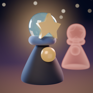

Support
Ghost of Me
Stuck in a room, found something that does not work, or just want to say hello? Write to ecansubasoglu@gmail.com. Please tell us your device and the name of the room.
A few tips
Rewind to call back your past: it repeats exactly what you did. Your past can stand on a stone or hold a door, but only you can walk through. Time only moves while you move, so take as long as you like to think. Hold the hourglass to let time pass on purpose.
Destek (Türkçe)
Bir odada mı takıldınız, bir sorun mu buldunuz? ecansubasoglu@gmail.com adresine yazın; cihazınızı ve odanın adını belirtin.